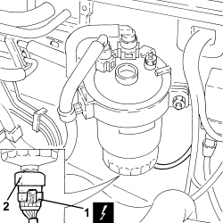

1060G30 WATER PRESENCE SENSOR IN FUEL FILTER - R.R.
- Path
- Procedures > 10 ENGINE > 1060 DIESEL INJECTION SYSTEM > 1060G DIESEL INJECTION PRESSURE PUMP ELECTRONIC CONTROL > 1060G30 WATER PRESENCE SENSOR IN FUEL FILTER - R.R.
- Kind
- repair procedure (removal / refitting; the operation number is the code)
- Applies to
- engines: 1.9 JTD 8v, 1.9 JTD 16v, 2.4 JTD 20v; all production periods
- Interactive page
- https://sloeber94.github.io/elrnDB-fCrm/en/#/194000338
Applies to: engines: 1.9 JTD 8v, 1.9 JTD 16v; all production periods
- The water in the fuel filter sensor is supplied by the Parts Dept. together with the fuel filter casing and is not available by itself.
Applies to: engines: 2.4 JTD 20v; all production periods
 Removing
Removing
 Refitting
Refitting- Make sure that the ignition key is in the OFF position, then disconnect the battery terminal (-).
Description | Connector | |
|---|---|---|
- | Battery |
Op. 1016A10 SOUND-PROOFING COVER - R.R
1. Disconnect the electrical connection from the water presence sensor on the fuel filter.
Description | Connector | |
|---|---|---|
1 | Water in diesel filter sensor |
2. Undo the fuel filter water presence sensor and remove it.

Applies to: engines: 2.4 JTD 20v; all production periods
Refitting
Removing- Place the water presence sensor in its housing on the fuel filter.
- Connect the electrical connection to the water presence sensor on the fuel filter.
Op. 1016A10 SOUND-PROOFING COVER - R.R
- Connect the negative battery terminal.
Topics linked from this page (4)
- 1016A10 SOUND-PROOFING COVER - R.R
- 1044B20 FUEL FILTER FILTERING ELEMENT - REPLACE
- A001 BATTERY
- K031 WATER IN DIESEL FILTER SENSOR